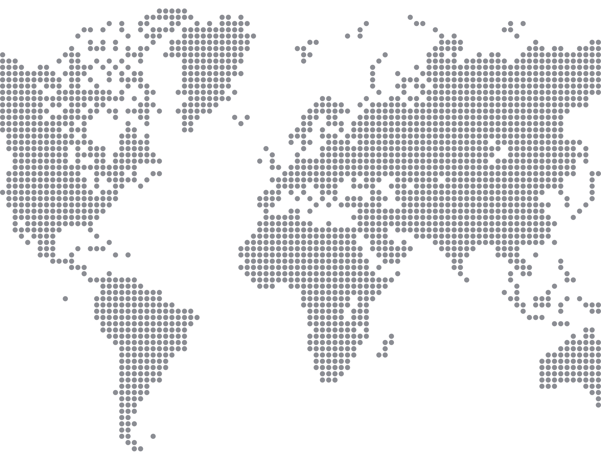

const prefersDark = window.matchMedia('(prefers-color-scheme: dark)').matches
const setting = localStorage.getItem('theme') || 'dark'
if (setting === 'dark' || (prefersDark && setting !== 'light')) {
document.documentElement.classList.add('dark')
} else {
document.documentElement.classList.remove('dark')
}
})()
 Conectando...
Conectando...